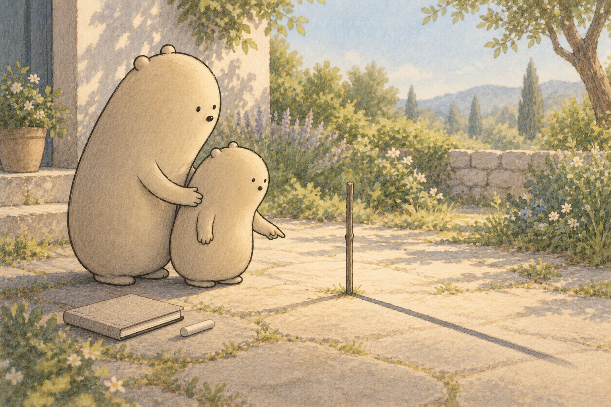

The shadow that changed
Shadows at Noon

Little Wonderer found a long shape beside a standing stick. It was a shadow: a place where the stick blocked sunlight, the light from the sun. “Will it stay this long?” Little asked. Big set a linen notebook beside the garden path. They had a question to keep.

Little took a piece of chalk, a soft stick for making marks. “First mark the tip,” said Big. Little drew a small line where the shadow ended. To measure is to find how long something is. They used a measuring stick from the wooden stick’s base to the chalk.

At noon, the middle of the day, they came back. The wooden stick had stayed in place, but its shadow had changed. “It is short and crisp!” said Little. Around noon, the sun is near its highest point for the day. The morning shadow had reached much farther.
- noon
- the middle of the day, when the sun is near its highest point
- shadow
- a place where an object blocks light
- measure
- find a length using a unit, such as a small step or a centimeter
- chalk
- a soft stick that leaves a mark on a path or board
- stick
- a thin piece of wood
- sunlight
- light that comes from the sun